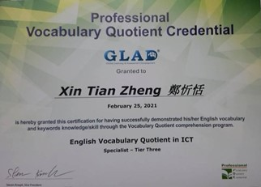

學歷
證照
電腦軟體應用丙級技術士 | 電腦軟體應用乙級技術士 |
會計事務-人工記帳丙級技術士 | 商業職業教育學會 會計能力測驗第三級 |
商業職業教育學會 英語能力測驗第四級 | TQC-OA 辦公軟體應用類 Word 2016 進階級 |
TQC-OA 辦公軟體應用類 Excel 2016 進階級 | TQC-OA 辦公軟體應用類 PowerPoint 2016 進階級 |
|  | |
TQC-DA 資料庫應用類 Access 2016 進階級 | PVQC 專業英文詞彙能力 國際認證－計算機類 |
功課表
星期一 |
星期二 |
星期三 |
星期四 |
星期五 |
|
第一節 |
英文 |
台灣文化遺產 |
|||
第二節 |
資訊管理導論 |
英文 |
台灣文化遺產 |
||
第三節 |
資訊管理導論 |
國文 |
進階程式設計 |
網頁設計 |
|
第四節 |
資訊管理導論 |
國文 |
進階程式設計 |
網頁設計 |
|
第五節 |
體育(籃球) |
經濟學 |
網頁設計 |
||
第六節 |
體育(籃球) |
經濟學 |
網頁設計 |
會計學 |
|
第七節 |
進階程式設計 |
經濟學 |
會計學 |
||
第八節 |
進階程式設計 |
會計學 |